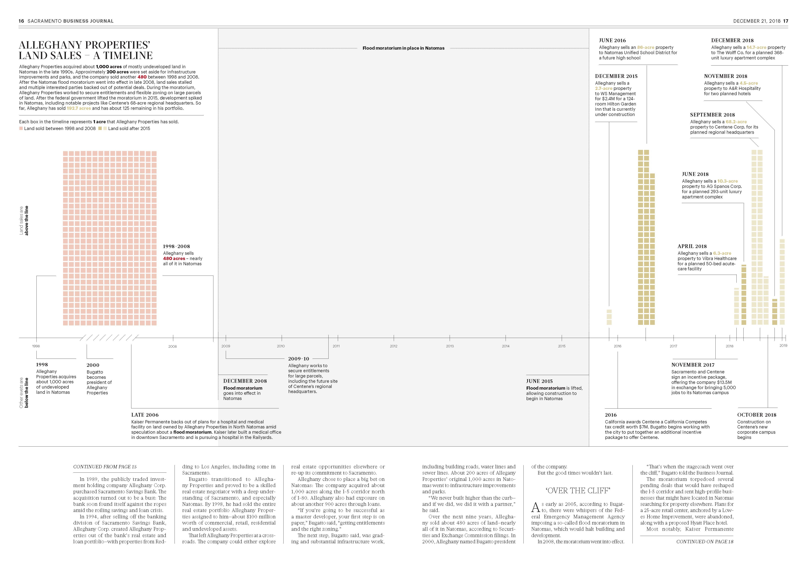
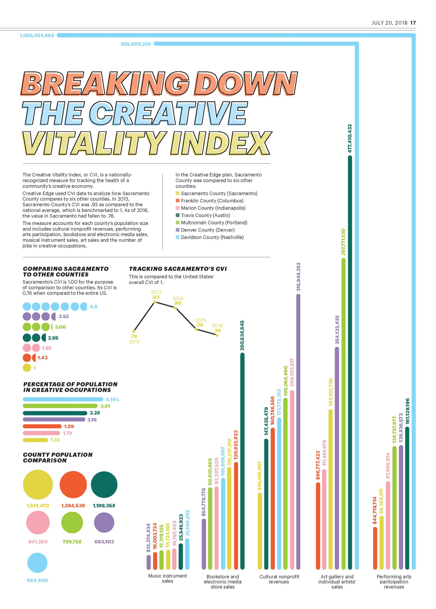
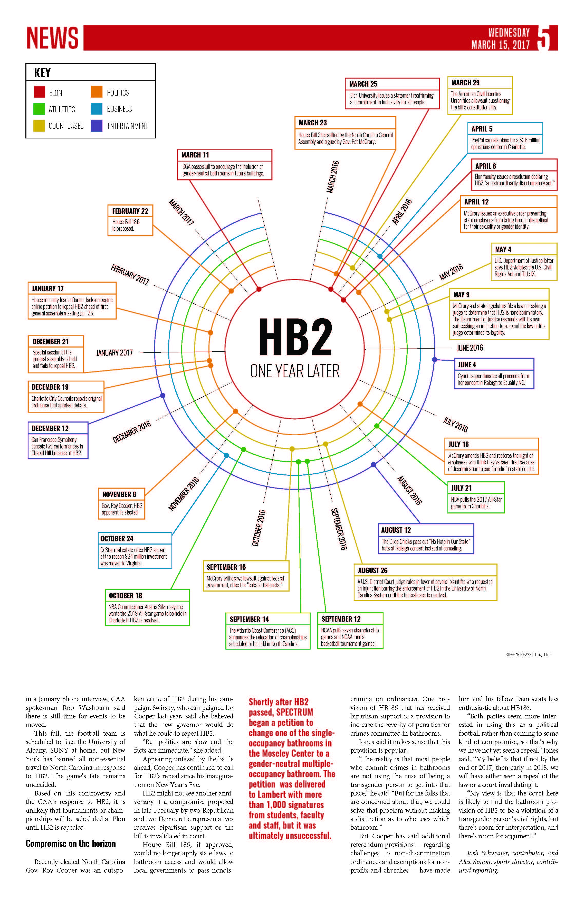
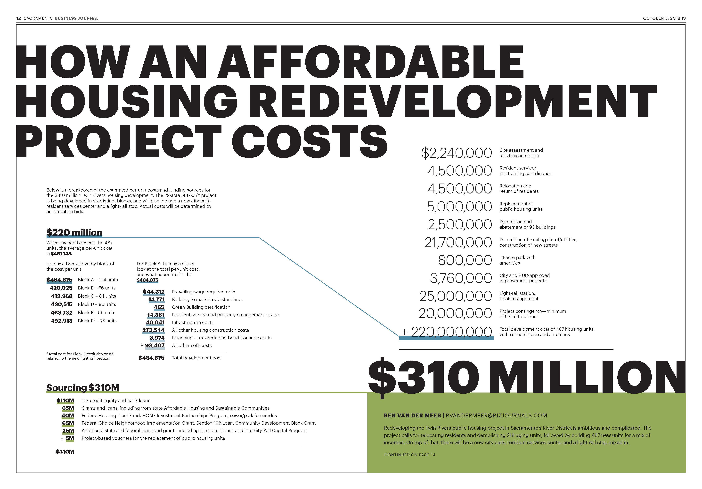
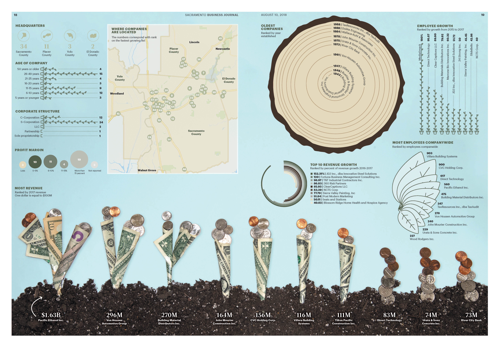
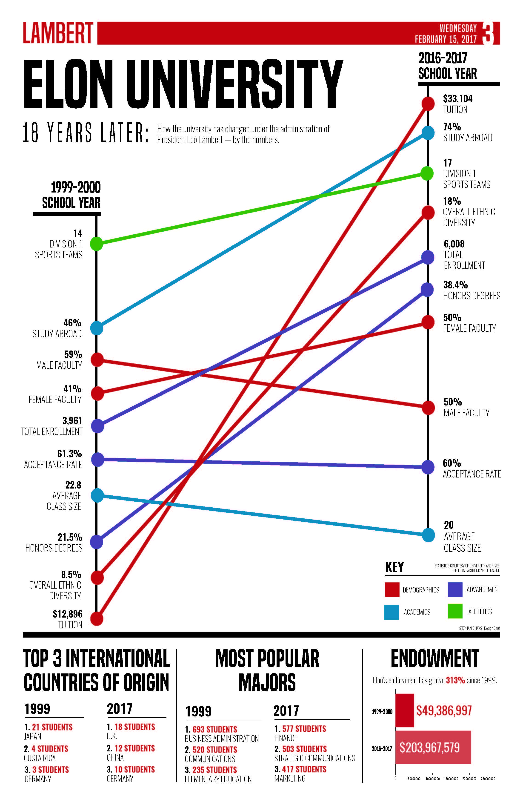
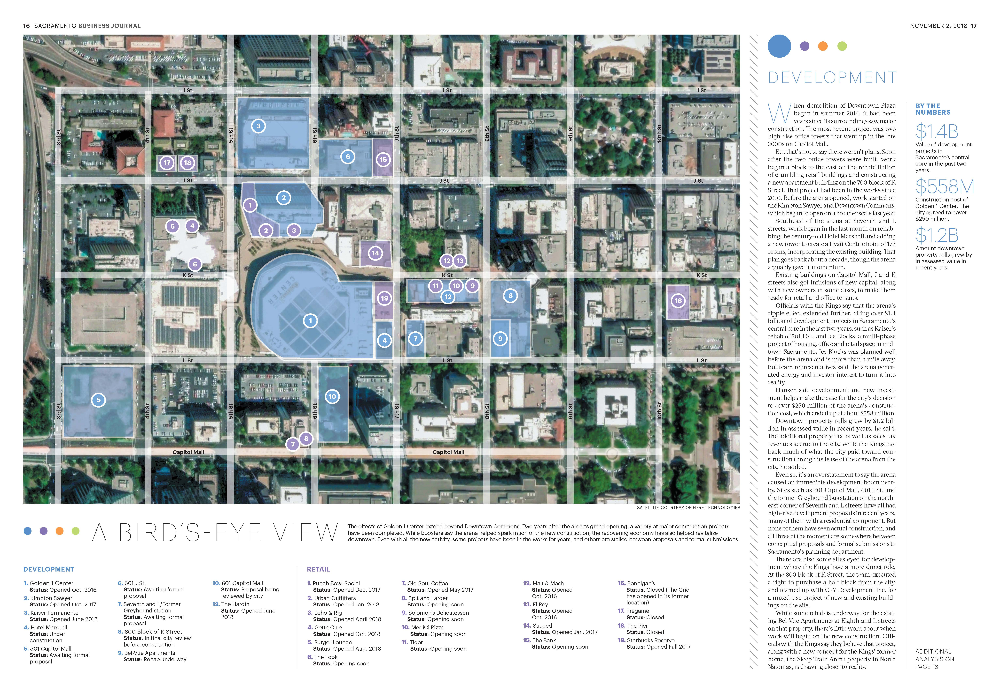

Sacramento Business Journal
A 20-year journey in North Natomas
Page design and infographic | This infographic charts 20 years of Alleghany Properties' land sales. It's a merge of a timeline and bar chart to show how a flood moratorium completely halted sales for eight years.
This package also included a side-by-side opening spread and drone footage to give a better view of the area. View the spread here and the drone footage here.
Sacramento Business Journal
Breaking down the creative vitality index
Page design and infographic | These graphs explain the different components that go into the "Creative Vitality Index."
Elon News Network
HB2: One year later
Page design and infographic | A circular calendar detailing key Elon-related events that ocurred after HB2 was passed.
Honorable mention from the North Carolina College Media Association for illustation/graphic
Sacramento Business Journal
Twin Rivers
Page design and infographic | This infographic breaks down why an affordable housing project is so costly, and where it's getting the money from.
Sacramento Business Journal
Fastest Growing Companies
Page design and infographic | To represent how much revenue the fastest-growing companies were making, I created money plants. Each dollar represents $100M.
Elon News Network
Elon University: 18 years later
Page design and infographic This graph shows the percent growth or percent decline of a variety of different variables over the course of a president's tenure.
Sacramento Business Journal
Still more to do
Page design and infographic | A map of downtown Sacramento showing current and future construction projects